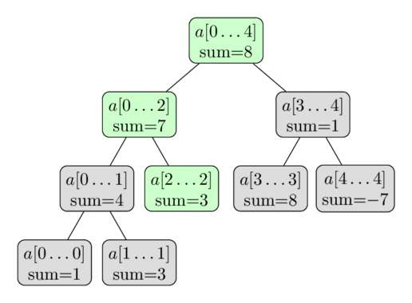

درخت بازه (Segment Tree)¶
درخت بازه یک ساختمان داده است که اطلاعات مربوط به بازههای یک آرایه را به صورت درختی ذخیره میکند. این ساختار داده امکان پاسخگویی بهینه به پرسوجوهای بازهای روی یک آرایه را فراهم میکند و در عین حال به اندازه کافی انعطافپذیر است تا امکان تغییر سریع آرایه را نیز بدهد. این قابلیتها شامل یافتن مجموع عناصر متوالی آرایه $a[l \dots r]$ یا یافتن عنصر کمینه در چنین بازهای در زمان $O(\log n)$ است. بین پاسخ به چنین پرسوجوهایی، درخت بازه امکان تغییر آرایه را با جایگزینی یک عنصر یا حتی تغییر عناصر یک زیربازه کامل فراهم میکند (مثلاً تخصیص یک مقدار به تمام عناصر $a[l \dots r]$ یا افزودن مقداری به تمام عناصر در آن زیربازه).
به طور کلی، درخت بازه یک ساختمان داده بسیار انعطافپذیر است و تعداد زیادی از مسائل را میتوان با آن حل کرد. علاوه بر این، امکان اعمال عملیات پیچیدهتر و پاسخ به پرسوجوهای پیچیدهتر نیز وجود دارد (بخش نسخههای پیشرفته درخت بازه را ببینید). بهویژه، درخت بازه را میتوان به راحتی به ابعاد بالاتر تعمیم داد. برای مثال، با یک درخت بازه دوبعدی میتوانید به پرسوجوهای مجموع یا کمینه روی یک زیرمستطیل از یک ماتریس در زمان $O(\log^2 n)$ پاسخ دهید.
یکی از ویژگیهای مهم درخت بازه این است که تنها به مقدار حافظه خطی نیاز دارد. درخت بازه استاندارد برای کار بر روی آرایهای به اندازه $n$ به $4n$ رأس نیاز دارد.
سادهترین شکل یک درخت بازه¶
برای شروع، سادهترین شکل یک درخت بازه را در نظر میگیریم. میخواهیم به پرسوجوهای مجموع به صورت بهینه پاسخ دهیم. تعریف رسمی وظیفه ما به این صورت است: با داشتن آرایه $a[0 \dots n-1]$، درخت بازه باید قادر به یافتن مجموع عناصر بین اندیسهای $l$ و $r$ (یعنی محاسبه مجموع $\sum_{i=l}^r a[i]$) و همچنین مدیریت تغییر مقادیر عناصر آرایه (یعنی انجام انتسابهایی به شکل $a[i] = x$) باشد. درخت بازه باید بتواند هر دو پرسوجو را در زمان $O(\log n)$ پردازش کند.
این یک بهبود نسبت به رویکردهای سادهتر است. یک پیادهسازی ساده با آرایه - فقط با استفاده از یک آرایه معمولی - میتواند عناصر را در زمان $O(1)$ بهروزرسانی کند، اما برای محاسبه هر پرسوجوی مجموع به زمان $O(n)$ نیاز دارد. و مجموعهای پیشوندی از پیش محاسبهشده میتوانند پرسوجوهای مجموع را در زمان $O(1)$ محاسبه کنند، اما بهروزرسانی یک عنصر آرایه به $O(n)$ تغییر در مجموعهای پیشوندی نیاز دارد.
ساختار درخت بازه¶
میتوانیم در مورد بازههای آرایه از رویکرد تقسیم و غلبه استفاده کنیم. ما مجموع عناصر کل آرایه، یعنی مجموع بازه $a[0 \dots n-1]$ را محاسبه و ذخیره میکنیم. سپس آرایه را به دو نیمه $a[0 \dots n/2-1]$ و $a[n/2 \dots n-1]$ تقسیم کرده و مجموع هر نیمه را محاسبه و ذخیره میکنیم. هر یک از این دو نیمه به نوبه خود به دو نیمه تقسیم میشوند و این کار تا زمانی ادامه مییابد که همه بازهها به اندازه $۱$ برسند.
میتوانیم این بازهها را به صورت یک درخت دودویی در نظر بگیریم: ریشه این درخت بازه $a[0 \dots n-1]$ است و هر رأس (به جز رأسهای برگ) دقیقاً دو فرزند دارد. به همین دلیل این ساختمان داده «درخت بازه» نامیده میشود، هرچند در بیشتر پیادهسازیها، درخت به صراحت ساخته نمیشود (بخش پیادهسازی را ببینید).
در اینجا یک نمایش تصویری از چنین درخت بازهای روی آرایه $a = [1, 3, -2, 8, -7]$ آمده است:

از این توصیف کوتاه از ساختمان داده، میتوانیم نتیجه بگیریم که یک درخت بازه تنها به تعداد خطی رأس نیاز دارد. سطح اول درخت شامل یک گره (ریشه) است، سطح دوم شامل دو رأس، در سطح سوم شامل چهار رأس خواهد بود، تا زمانی که تعداد رأسها به $n$ برسد. بنابراین تعداد رأسها در بدترین حالت را میتوان با مجموع $1 + 2 + 4 + \dots + 2^{\lceil\log_2 n\rceil} \lt 2^{\lceil\log_2 n\rceil + 1} \lt 4n$ تخمین زد.
شایان ذکر است که هرگاه $n$ توانی از دو نباشد، تمام سطوح درخت بازه به طور کامل پر نخواهند شد. میتوانیم این رفتار را در تصویر مشاهده کنیم. فعلاً میتوانیم این واقعیت را فراموش کنیم، اما بعداً در حین پیادهسازی اهمیت پیدا میکند.
ارتفاع درخت بازه $O(\log n)$ است، زیرا هنگام پایین رفتن از ریشه به سمت برگها، اندازه بازهها تقریباً نصف میشود.
ساختن درخت¶
قبل از ساختن درخت بازه، باید تصمیم بگیریم:
- مقداری که در هر گره درخت بازه ذخیره میشود. برای مثال، در یک درخت بازه برای مجموع، یک گره مجموع عناصر در بازه خود $[l, r]$ را ذخیره میکند.
- عملیات ادغام که دو گره خواهر و برادر را در یک درخت بازه ادغام میکند. برای مثال، در یک درخت بازه برای مجموع، دو گره مربوط به بازههای $a[l_1 \dots r_1]$ و $a[l_2 \dots r_2]$ با جمع کردن مقادیرشان در یک گره مربوط به بازه $a[l_1 \dots r_2]$ ادغام میشوند.
توجه داشته باشید که یک رأس، «رأس برگ» است اگر بازه مربوط به آن فقط یک مقدار از آرایه اصلی را پوشش دهد. این رأس در پایینترین سطح درخت بازه قرار دارد. مقدار آن برابر با عنصر (مربوطه) $a[i]$ خواهد بود.
حال، برای ساخت درخت بازه، از سطح پایین (رأسهای برگ) شروع کرده و مقادیر مربوط به آنها را تخصیص میدهیم. بر اساس این مقادیر، میتوانیم مقادیر سطح بالاتر را با استفاده از تابع merge محاسبه کنیم.
و بر اساس آنها، میتوانیم مقادیر سطح بالاتر را محاسبه کرده و این روند را تا رسیدن به رأس ریشه تکرار کنیم.
توصیف این عملیات به صورت بازگشتی در جهت دیگر، یعنی از رأس ریشه به رأسهای برگ، راحتتر است. رویه ساخت، اگر روی یک رأس غیربرگ فراخوانی شود، کارهای زیر را انجام میدهد:
- به صورت بازگشتی مقادیر دو رأس فرزند را میسازد
- مقادیر محاسبهشده این فرزندان را ادغام میکند.
ما ساخت را از رأس ریشه شروع میکنیم، و بنابراین، میتوانیم کل درخت بازه را محاسبه کنیم.
پیچیدگی زمانی این ساخت $O(n)$ است، با فرض اینکه عملیات ادغام زمان ثابتی داشته باشد (عملیات ادغام $n$ بار فراخوانی میشود، که برابر با تعداد گرههای داخلی در درخت بازه است).
پرسوجوهای مجموع¶
فعلاً میخواهیم به پرسوجوهای مجموع پاسخ دهیم. به عنوان ورودی، دو عدد صحیح $l$ و $r$ دریافت میکنیم و باید مجموع بازه $a[l \dots r]$ را در زمان $O(\log n)$ محاسبه کنیم.
برای انجام این کار، درخت بازه را پیمایش کرده و از مجموعهای از پیش محاسبهشده بازهها استفاده میکنیم. فرض کنیم در حال حاضر در رأسی هستیم که بازه $a[tl \dots tr]$ را پوشش میدهد. سه حالت ممکن وجود دارد.
سادهترین حالت زمانی است که بازه $a[l \dots r]$ با بازه مربوط به رأس فعلی برابر باشد (یعنی $a[l \dots r] = a[tl \dots tr]$)، در این صورت کار تمام است و میتوانیم مجموع از پیش محاسبهشدهای که در رأس ذخیره شده است را برگردانیم.
حالت دیگر این است که بازه پرسوجو به طور کامل در دامنه فرزند چپ یا راست قرار گیرد. به یاد بیاورید که فرزند چپ بازه $a[tl \dots tm]$ و فرزند راست بازه $a[tm + 1 \dots tr]$ را با $tm = (tl + tr) / 2$ پوشش میدهد. در این حالت میتوانیم به سادگی به رأس فرزندی برویم که بازهاش، بازه پرسوجو را پوشش میدهد و الگوریتم توصیفشده را با آن رأس اجرا کنیم.
و در نهایت حالت آخر، بازه پرسوجو با هر دو فرزند تلاقی دارد. در این حالت چارهای جز انجام دو فراخوانی بازگشتی، یکی برای هر فرزند، نداریم. ابتدا به فرزند چپ میرویم، یک پاسخ جزئی برای این رأس محاسبه میکنیم (یعنی مجموع مقادیر تلاقی بین بازه پرسوجو و بازه فرزند چپ)، سپس به فرزند راست میرویم، پاسخ جزئی را با استفاده از آن رأس محاسبه میکنیم و سپس پاسخها را با جمع کردنشان ترکیب میکنیم. به عبارت دیگر، از آنجا که فرزند چپ بازه $a[tl \dots tm]$ و فرزند راست بازه $a[tm+1 \dots tr]$ را نشان میدهد، پرسوجوی مجموع $a[l \dots tm]$ را با استفاده از فرزند چپ و پرسوجوی مجموع $a[tm+1 \dots r]$ را با استفاده از فرزند راست محاسبه میکنیم.
بنابراین پردازش یک پرسوجوی مجموع، یک تابع است که به صورت بازگشتی خود را یک بار با فرزند چپ یا راست (بدون تغییر مرزهای پرسوجو) یا دو بار، یک بار برای چپ و یک بار برای راست (با تقسیم پرسوجو به دو زیرپرسوجو) فراخوانی میکند. و بازگشت زمانی پایان مییابد که مرزهای بازه پرسوجوی فعلی با مرزهای بازه رأس فعلی منطبق شوند. در آن حالت، پاسخ، مقدار از پیش محاسبهشده مجموع این بازه خواهد بود که در درخت ذخیره شده است.
به عبارت دیگر، محاسبه پرسوجو یک پیمایش از درخت است که در تمام شاخههای لازم درخت پخش میشود و از مقادیر مجموع از پیش محاسبهشده بازهها در درخت استفاده میکند.
بدیهی است که پیمایش را از رأس ریشه درخت بازه شروع خواهیم کرد.
این رویه در تصویر زیر نشان داده شده است. دوباره از آرایه $a = [1, 3, -2, 8, -7]$ استفاده شده و اینجا میخواهیم مجموع $\sum_{i=2}^4 a[i]$ را محاسبه کنیم. رأسهای رنگی بازدید میشوند و ما از مقادیر از پیش محاسبهشده رأسهای سبز استفاده خواهیم کرد. این کار نتیجه $ -2 + 1 = -1$ را به ما میدهد.

چرا پیچیدگی این الگوریتم $O(\log n)$ است؟ برای نشان دادن این پیچیدگی، به هر سطح از درخت نگاه میکنیم. معلوم میشود که برای هر سطح، ما بیش از چهار رأس را بازدید نمیکنیم. و از آنجایی که ارتفاع درخت $O(\log n)$ است، به زمان اجرای مطلوب میرسیم.
میتوانیم با استقرا نشان دهیم که این گزاره (حداکثر چهار رأس در هر سطح) درست است. در سطح اول، فقط یک رأس، یعنی رأس ریشه، را بازدید میکنیم، بنابراین در اینجا کمتر از چهار رأس بازدید میشود. حال به یک سطح دلخواه نگاه میکنیم. طبق فرض استقرا، حداکثر چهار رأس را بازدید میکنیم. اگر حداکثر دو رأس را بازدید کنیم، سطح بعدی حداکثر چهار رأس خواهد داشت. این بدیهی است، زیرا هر رأس حداکثر میتواند دو فراخوانی بازگشتی ایجاد کند. بنابراین فرض کنیم که سه یا چهار رأس را در سطح فعلی بازدید میکنیم. از این رأسها، رأسهای میانی را با دقت بیشتری تحلیل میکنیم. از آنجایی که پرسوجوی مجموع، مجموع یک زیرآرایه پیوسته را میخواهد، میدانیم که بازههای مربوط به رأسهای بازدید شده در وسط، به طور کامل توسط بازه پرسوجوی مجموع پوشش داده خواهند شد. بنابراین این رأسها هیچ فراخوانی بازگشتی انجام نخواهند داد. پس فقط چپترین و راستترین رأسها پتانسیل انجام فراخوانیهای بازگشتی را دارند. و آنها حداکثر چهار فراخوانی بازگشتی ایجاد خواهند کرد، بنابراین سطح بعدی نیز این گزاره را برآورده خواهد کرد. میتوانیم بگوییم یک شاخه به مرز چپ پرسوجو نزدیک میشود و شاخه دوم به مرز راست آن.
بنابراین در مجموع حداکثر $4 \log n$ رأس بازدید میکنیم و این برابر با زمان اجرای $O(\log n)$ است.
در نتیجه، پرسوجو با تقسیم بازه ورودی به چندین زیربازه که مجموعهایشان قبلاً در درخت محاسبه و ذخیره شدهاند، کار میکند. و اگر هر زمان که بازه پرسوجو با بازه رأس منطبق شد، تقسیمبندی را متوقف کنیم، تنها به $O(\log n)$ چنین بازهای نیاز خواهیم داشت که این کارایی درخت بازه را نشان میدهد.
پرسوجوهای بهروزرسانی¶
حالا میخواهیم یک عنصر خاص در آرایه را تغییر دهیم، فرض کنید میخواهیم انتساب $a[i] = x$ را انجام دهیم. و باید درخت بازه را بازسازی کنیم تا با آرایه جدید و اصلاحشده مطابقت داشته باشد.
این پرسوجو از پرسوجوی مجموع سادهتر است. هر سطح از یک درخت بازه یک افراز از آرایه را تشکیل میدهد. بنابراین یک عنصر $a[i]$ فقط به یک بازه از هر سطح کمک میکند. در نتیجه، تنها $O(\log n)$ رأس نیاز به بهروزرسانی دارند.
به راحتی میتوان دید که درخواست بهروزرسانی را میتوان با یک تابع بازگشتی پیادهسازی کرد. این تابع رأس فعلی درخت را به عنوان پارامتر دریافت میکند و به صورت بازگشتی خود را با یکی از دو رأس فرزند (آنکه $a[i]$ را در بازهاش دارد) فراخوانی میکند و پس از آن مقدار مجموع خود را، مشابه آنچه در متد ساخت انجام میشود، دوباره محاسبه میکند (یعنی به عنوان مجموع دو فرزندش).
باز هم در اینجا یک تصویرسازی با استفاده از همان آرایه آمده است. در اینجا ما بهروزرسانی $a[2] = 3$ را انجام میدهیم. رأسهای سبز، رأسهایی هستند که ما بازدید و بهروزرسانی میکنیم.

پیادهسازی¶
ملاحظه اصلی این است که چگونه درخت بازه را ذخیره کنیم.
البته میتوانیم یک ساختار Vertex تعریف کرده و اشیایی بسازیم که مرزهای بازه، مجموع آن و علاوه بر آن اشارهگرهایی به رأسهای فرزندش را ذخیره کنند.
با این حال، این کار نیاز به ذخیره اطلاعات اضافی زیادی در قالب اشارهگرها دارد.
ما از یک ترفند ساده برای کارآمدتر کردن این کار با استفاده از یک ساختار داده ضمنی استفاده خواهیم کرد: فقط ذخیره مجموعها در یک آرایه.
(یک روش مشابه برای هیپهای دودویی استفاده میشود).
مجموع رأس ریشه در اندیس ۱، مجموع دو رأس فرزندش در اندیسهای ۲ و ۳، مجموع فرزندان آن دو رأس در اندیسهای ۴ تا ۷ و به همین ترتیب.
با اندیسگذاری از ۱، به راحتی فرزند چپ یک رأس در اندیس $i$ در اندیس $2i$ و فرزند راست آن در اندیس $2i + 1$ ذخیره میشود.
به طور معادل، والد یک رأس در اندیس $i$ در $i/2$ (تقسیم صحیح) ذخیره میشود.
این کار پیادهسازی را بسیار ساده میکند. نیازی به ذخیره ساختار درخت در حافظه نداریم. این ساختار به صورت ضمنی تعریف شده است. ما فقط به یک آرایه نیاز داریم که شامل مجموع تمام بازهها باشد.
همانطور که قبلاً ذکر شد، حداکثر $4n$ رأس باید ذخیره کنیم. ممکن است کمتر باشد، اما برای راحتی همیشه یک آرایه به اندازه $4n$ اختصاص میدهیم. برخی از عناصر در آرایه مجموع وجود خواهند داشت که با هیچ رأسی در درخت واقعی مطابقت ندارند، اما این موضوع پیادهسازی را پیچیده نمیکند.
بنابراین، ما درخت بازه را به سادگی به عنوان یک آرایه $t[]$ با اندازه چهار برابر اندازه ورودی $n$ ذخیره میکنیم:
int n, t[4*MAXN];
رویه ساخت درخت بازه از یک آرایه داده شده $a[]$ به این صورت است: این یک تابع بازگشتی با پارامترهای $a[]$ (آرایه ورودی)، $v$ (اندیس رأس فعلی) و مرزهای $tl$ و $tr$ بازه فعلی است. در برنامه اصلی این تابع با پارامترهای رأس ریشه فراخوانی میشود: $v = 1$، $tl = 0$ و $tr = n - 1$.
void build(int a[], int v, int tl, int tr) {
if (tl == tr) {
t[v] = a[tl];
} else {
int tm = (tl + tr) / 2;
build(a, v*2, tl, tm);
build(a, v*2+1, tm+1, tr);
t[v] = t[v*2] + t[v*2+1];
}
}
علاوه بر این، تابع پاسخ به پرسوجوهای مجموع نیز یک تابع بازگشتی است که به عنوان پارامتر اطلاعات مربوط به رأس/بازه فعلی (یعنی اندیس $v$ و مرزهای $tl$ و $tr$) و همچنین اطلاعات مربوط به مرزهای پرسوجو، $l$ و $r$ را دریافت میکند. برای سادهسازی کد، این تابع همیشه دو فراخوانی بازگشتی انجام میدهد، حتی اگر فقط یکی لازم باشد - در آن صورت فراخوانی بازگشتی اضافی $l > r$ خواهد داشت، و این به راحتی با یک بررسی اضافی در ابتدای تابع قابل تشخیص است.
int sum(int v, int tl, int tr, int l, int r) {
if (l > r)
return 0;
if (l == tl && r == tr) {
return t[v];
}
int tm = (tl + tr) / 2;
return sum(v*2, tl, tm, l, min(r, tm))
+ sum(v*2+1, tm+1, tr, max(l, tm+1), r);
}
در نهایت پرسوجوی بهروزرسانی. این تابع نیز اطلاعات مربوط به رأس/بازه فعلی و علاوه بر آن پارامتر پرسوجوی بهروزرسانی (یعنی موقعیت عنصر و مقدار جدید آن) را دریافت میکند.
void update(int v, int tl, int tr, int pos, int new_val) {
if (tl == tr) {
t[v] = new_val;
} else {
int tm = (tl + tr) / 2;
if (pos <= tm)
update(v*2, tl, tm, pos, new_val);
else
update(v*2+1, tm+1, tr, pos, new_val);
t[v] = t[v*2] + t[v*2+1];
}
}
پیادهسازی با حافظه بهینه¶
بیشتر افراد از پیادهسازی بخش قبل استفاده میکنند. اگر به آرایه t نگاه کنید، میبینید که شمارهگذاری گرههای درخت را به ترتیب پیمایش BFS (پیمایش سطح به سطح) دنبال میکند.
با استفاده از این پیمایش، فرزندان رأس $v$ به ترتیب $2v$ و $2v + 1$ هستند.
اما اگر $n$ توانی از دو نباشد، این روش برخی از اندیسها را نادیده گرفته و بخشهایی از آرایه t را بدون استفاده باقی میگذارد.
مصرف حافظه به $4n$ محدود میشود، در حالی که یک درخت بازه از آرایهای با $n$ عنصر تنها به $2n - 1$ رأس نیاز دارد.
با این حال، میتوان آن را کاهش داد. ما رأسهای درخت را به ترتیب پیمایش تور اویلر (پیمایش پیشترتیب) دوباره شمارهگذاری میکنیم و همه این رأسها را کنار هم مینویسیم.
بیایید به رأسی در اندیس $v$ نگاه کنیم، و فرض کنیم مسئول بازه $[l, r]$ است و $mid = \dfrac{l + r}{2}$. واضح است که فرزند چپ اندیس $v + 1$ را خواهد داشت. فرزند چپ مسئول بازه $[l, mid]$ است، یعنی در مجموع $2 * (mid - l + 1) - 1$ رأس در زیردرخت فرزند چپ وجود خواهد داشت. بنابراین میتوانیم اندیس فرزند راست $v$ را محاسبه کنیم. اندیس آن $v + 2 * (mid - l + 1)$ خواهد بود. با این شمارهگذاری به کاهشی در حافظه مورد نیاز به $2n$ دست مییابیم.
نسخههای پیشرفته درخت بازه¶
یک درخت بازه ساختار داده بسیار انعطافپذیری است و امکان تغییرات و توسعهها در جهات مختلف را فراهم میکند. بیایید سعی کنیم آنها را در زیر دستهبندی کنیم.
پرسوجوهای پیچیدهتر¶
تغییر درخت بازه در جهتی که پرسوجوهای مختلفی را محاسبه کند (مثلاً محاسبه کمینه / بیشینه به جای مجموع) میتواند کاملاً آسان باشد، اما همچنین میتواند بسیار غیربدیهی باشد.
یافتن بیشینه¶
بیایید شرط مسئله توصیف شده در بالا را کمی تغییر دهیم: به جای پرسوجوی مجموع، اکنون پرسوجوهای بیشینه را انجام خواهیم داد.
درخت دقیقاً همان ساختاری را خواهد داشت که در بالا توصیف شد. ما فقط باید نحوه محاسبه $t[v]$ را در توابع $\text{build}$ و $\text{update}$ تغییر دهیم. $t[v]$ اکنون بیشینه بازه مربوطه را ذخیره خواهد کرد. و همچنین باید محاسبه مقدار بازگشتی تابع $\text{sum}$ را تغییر دهیم (جایگزین کردن جمع با بیشینه).
البته این مسئله را میتوان به راحتی به محاسبه کمینه به جای بیشینه تغییر داد.
به جای نشان دادن پیادهسازی این مسئله، پیادهسازی نسخه پیچیدهتری از این مسئله در بخش بعدی ارائه خواهد شد.
یافتن بیشینه و تعداد دفعات ظهور آن¶
این وظیفه بسیار شبیه به وظیفه قبلی است. علاوه بر یافتن بیشینه، باید تعداد رخدادهای آن را نیز پیدا کنیم.
برای حل این مسئله، یک جفت عدد در هر رأس درخت ذخیره میکنیم: علاوه بر بیشینه، تعداد رخدادهای آن را نیز در بازه مربوطه ذخیره میکنیم. تعیین جفت صحیح برای ذخیره در $t[v]$ هنوز هم میتواند در زمان ثابت با استفاده از اطلاعات جفتهای ذخیره شده در رأسهای فرزند انجام شود. ترکیب دو چنین جفتی باید در یک تابع جداگانه انجام شود، زیرا این عملیاتی است که ما هنگام ساخت درخت، هنگام پاسخ به پرسوجوهای بیشینه و هنگام انجام تغییرات انجام خواهیم داد.
pair<int, int> t[4*MAXN];
pair<int, int> combine(pair<int, int> a, pair<int, int> b) {
if (a.first > b.first)
return a;
if (b.first > a.first)
return b;
return make_pair(a.first, a.second + b.second);
}
void build(int a[], int v, int tl, int tr) {
if (tl == tr) {
t[v] = make_pair(a[tl], 1);
} else {
int tm = (tl + tr) / 2;
build(a, v*2, tl, tm);
build(a, v*2+1, tm+1, tr);
t[v] = combine(t[v*2], t[v*2+1]);
}
}
pair<int, int> get_max(int v, int tl, int tr, int l, int r) {
if (l > r)
return make_pair(-INF, 0);
if (l == tl && r == tr)
return t[v];
int tm = (tl + tr) / 2;
return combine(get_max(v*2, tl, tm, l, min(r, tm)),
get_max(v*2+1, tm+1, tr, max(l, tm+1), r));
}
void update(int v, int tl, int tr, int pos, int new_val) {
if (tl == tr) {
t[v] = make_pair(new_val, 1);
} else {
int tm = (tl + tr) / 2;
if (pos <= tm)
update(v*2, tl, tm, pos, new_val);
else
update(v*2+1, tm+1, tr, pos, new_val);
t[v] = combine(t[v*2], t[v*2+1]);
}
}
محاسبه بزرگترین مقسومعلیه مشترک / کوچکترین مضرب مشترک¶
در این مسئله میخواهیم ب.م.م / ک.م.م تمام اعداد بازههای داده شده از آرایه را محاسبه کنیم.
این نوع جالب از درخت بازه را میتوان دقیقاً به همان روشی که درختان بازه برای پرسوجوهای مجموع / کمینه / بیشینه استخراج کردیم، حل کرد: کافی است ب.م.م / ک.م.م رأس مربوطه را در هر رأس درخت ذخیره کنیم. ترکیب دو رأس را میتوان با محاسبه ب.م.م / ک.م.م هر دو رأس انجام داد.
شمارش تعداد صفرها، جستجو برای $k$-امین صفر¶
در این مسئله میخواهیم تعداد صفرها را در یک بازه مشخص پیدا کنیم و علاوه بر آن، با استفاده از یک تابع دوم، اندیس $k$-امین صفر را پیدا کنیم.
باز هم باید مقادیر ذخیره شده در درخت را کمی تغییر دهیم: این بار تعداد صفرها را در هر بازه در $t[]$ ذخیره خواهیم کرد. کاملاً واضح است که چگونه توابع $\text{build}$، $\text{update}$ و $\text{count_zero}$ را پیادهسازی کنیم، میتوانیم به سادگی از ایدههای مسئله پرسوجوی مجموع استفاده کنیم. بنابراین بخش اول مسئله را حل کردیم.
اکنون یاد میگیریم چگونه مسئله یافتن $k$-امین صفر در آرایه $a[]$ را حل کنیم. برای انجام این کار، از درخت بازه پایین میرویم، از رأس ریشه شروع میکنیم و هر بار به فرزند چپ یا راست حرکت میکنیم، بسته به اینکه کدام بازه شامل $k$-امین صفر است. برای تصمیمگیری در مورد اینکه به کدام فرزند برویم، کافی است به تعداد صفرهای موجود در بازه مربوط به رأس چپ نگاه کنیم. اگر این تعداد از پیش محاسبهشده بزرگتر یا مساوی $k$ باشد، لازم است به فرزند چپ برویم و در غیر این صورت به فرزند راست. توجه داشته باشید، اگر فرزند راست را انتخاب کنیم، باید تعداد صفرهای فرزند چپ را از $k$ کم کنیم.
در پیادهسازی میتوانیم حالت خاصی که $a[]$ کمتر از $k$ صفر دارد را با بازگرداندن -1 مدیریت کنیم.
int find_kth(int v, int tl, int tr, int k) {
if (k > t[v])
return -1;
if (tl == tr)
return tl;
int tm = (tl + tr) / 2;
if (t[v*2] >= k)
return find_kth(v*2, tl, tm, k);
else
return find_kth(v*2+1, tm+1, tr, k - t[v*2]);
}
جستجوی پیشوندی از آرایه با یک مقدار معین¶
وظیفه به شرح زیر است: برای یک مقدار داده شده $x$، باید به سرعت کوچکترین اندیس $i$ را پیدا کنیم به طوری که مجموع $i$ عنصر اول آرایه $a[]$ بزرگتر یا مساوی $x$ باشد (با فرض اینکه آرایه $a[]$ فقط شامل مقادیر غیرمنفی است).
این وظیفه را میتوان با استفاده از جستجوی دودویی و محاسبه مجموع پیشوندها با درخت بازه حل کرد. اما این کار به یک راه حل $O(\log^2 n)$ منجر میشود.
در عوض میتوانیم از همان ایده بخش قبلی استفاده کنیم و موقعیت را با پایین رفتن در درخت پیدا کنیم: با حرکت هر بار به چپ یا راست، بسته به مجموع فرزند چپ. بنابراین پاسخ را در زمان $O(\log n)$ پیدا میکنیم.
جستجو برای اولین عنصر بزرگتر از یک مقدار معین¶
وظیفه به شرح زیر است: برای یک مقدار داده شده $x$ و یک بازه $a[l \dots r]$، کوچکترین $i$ را در بازه $a[l \dots r]$ پیدا کنید، به طوری که $a[i]$ بزرگتر از $x$ باشد.
این وظیفه را میتوان با استفاده از جستجوی دودویی روی پرسوجوهای بیشینه پیشوند با درخت بازه حل کرد. اما این کار به یک راه حل $O(\log^2 n)$ منجر میشود.
در عوض، میتوانیم از همان ایده بخشهای قبلی استفاده کنیم و موقعیت را با پایین رفتن در درخت پیدا کنیم: با حرکت هر بار به چپ یا راست، بسته به مقدار بیشینه فرزند چپ. بنابراین پاسخ را در زمان $O(\log n)$ پیدا میکنیم.
int get_first(int v, int tl, int tr, int l, int r, int x) {
if(tl > r || tr < l) return -1;
if(t[v] <= x) return -1;
if (tl== tr) return tl;
int tm = tl + (tr-tl)/2;
int left = get_first(2*v, tl, tm, l, r, x);
if(left != -1) return left;
return get_first(2*v+1, tm+1, tr, l ,r, x);
}
یافتن زیربازهها با بیشترین مجموع¶
در اینجا باز هم برای هر پرسوجو یک بازه $a[l \dots r]$ دریافت میکنیم، این بار باید یک زیربازه $a[l^\prime \dots r^\prime]$ پیدا کنیم به طوری که $l \le l^\prime$ و $r^\prime \le r$ و مجموع عناصر این بازه بیشینه باشد. همانند قبل، میخواهیم بتوانیم عناصر جداگانه آرایه را نیز تغییر دهیم. عناصر آرایه میتوانند منفی باشند و زیربازه بهینه میتواند خالی باشد (مثلاً اگر همه عناصر منفی باشند).
این مسئله یک استفاده غیربدیهی از درخت بازه است. این بار چهار مقدار برای هر رأس ذخیره خواهیم کرد: مجموع بازه، بیشترین مجموع پیشوندی، بیشترین مجموع پسوندی، و مجموع زیربازه بیشینه در آن. به عبارت دیگر، برای هر بازه از درخت بازه، پاسخ از قبل محاسبه شده است و همچنین پاسخها برای بازههایی که با مرزهای چپ و راست بازه تماس دارند.
چگونه درختی با چنین دادههایی بسازیم؟ باز هم آن را به صورت بازگشتی محاسبه میکنیم: ابتدا هر چهار مقدار را برای فرزندان چپ و راست محاسبه میکنیم، و سپس آنها را ترکیب میکنیم تا چهار مقدار برای رأس فعلی به دست آید. توجه داشته باشید که پاسخ برای رأس فعلی یکی از موارد زیر است:
- پاسخ فرزند چپ، که به این معنی است که زیربازه بهینه کاملاً در بازه فرزند چپ قرار دارد.
- پاسخ فرزند راست، که به این معنی است که زیربازه بهینه کاملاً در بازه فرزند راست قرار دارد.
- مجموع بیشترین مجموع پسوندی فرزند چپ و بیشترین مجموع پیشوندی فرزند راست، که به این معنی است که زیربازه بهینه با هر دو فرزند تلاقی دارد.
بنابراین پاسخ برای رأس فعلی، بیشینه این سه مقدار است. محاسبه بیشترین مجموع پیشوندی / پسوندی حتی سادهتر است. در اینجا پیادهسازی تابع $\text{combine}$ آمده است، که فقط دادهها را از فرزند چپ و راست دریافت میکند و دادههای رأس فعلی را برمیگرداند.
struct data {
int sum, pref, suff, ans;
};
data combine(data l, data r) {
data res;
res.sum = l.sum + r.sum;
res.pref = max(l.pref, l.sum + r.pref);
res.suff = max(r.suff, r.sum + l.suff);
res.ans = max(max(l.ans, r.ans), l.suff + r.pref);
return res;
}
با استفاده از تابع $\text{combine}$، ساختن درخت بازه آسان است. میتوانیم آن را دقیقاً به همان روشی که در پیادهسازیهای قبلی انجام دادیم، پیادهسازی کنیم. برای مقداردهی اولیه به رأسهای برگ، علاوه بر این، تابع کمکی $\text{make_data}$ را ایجاد میکنیم که یک شیء $\text{data}$ حاوی اطلاعات یک مقدار واحد را برمیگرداند.
data make_data(int val) {
data res;
res.sum = val;
res.pref = res.suff = res.ans = max(0, val);
return res;
}
void build(int a[], int v, int tl, int tr) {
if (tl == tr) {
t[v] = make_data(a[tl]);
} else {
int tm = (tl + tr) / 2;
build(a, v*2, tl, tm);
build(a, v*2+1, tm+1, tr);
t[v] = combine(t[v*2], t[v*2+1]);
}
}
void update(int v, int tl, int tr, int pos, int new_val) {
if (tl == tr) {
t[v] = make_data(new_val);
} else {
int tm = (tl + tr) / 2;
if (pos <= tm)
update(v*2, tl, tm, pos, new_val);
else
update(v*2+1, tm+1, tr, pos, new_val);
t[v] = combine(t[v*2], t[v*2+1]);
}
}
فقط باقی میماند که چگونه به یک پرسوجو پاسخ دهیم. برای پاسخ به آن، همانند قبل در درخت پایین میرویم، پرسوجو را به چندین زیربازه که با بازههای درخت بازه منطبق هستند، میشکنیم و پاسخها را در آنها به یک پاسخ واحد برای پرسوجو ترکیب میکنیم. پس باید واضح باشد که کار دقیقاً مانند درخت بازه ساده است، اما به جای جمع / کمینهسازی / بیشینهسازی مقادیر، از تابع $\text{combine}$ استفاده میکنیم.
data query(int v, int tl, int tr, int l, int r) {
if (l > r)
return make_data(0);
if (l == tl && r == tr)
return t[v];
int tm = (tl + tr) / 2;
return combine(query(v*2, tl, tm, l, min(r, tm)),
query(v*2+1, tm+1, tr, max(l, tm+1), r));
}
ذخیره کل زیرآرایهها در هر رأس¶
این یک زیربخش جداگانه است که از بقیه متمایز است، زیرا در هر رأس از درخت بازه ما اطلاعات مربوط به بازه را به صورت فشرده ذخیره نمیکنیم (مجموع، کمینه، بیشینه، ...)، بلکه تمام عناصر بازه را ذخیره میکنیم. بنابراین ریشه درخت بازه تمام عناصر آرایه را ذخیره خواهد کرد، رأس فرزند چپ نیمه اول آرایه را، رأس راست نیمه دوم را، و به همین ترتیب.
در سادهترین کاربرد این تکنیک، ما عناصر را به ترتیب مرتب شده ذخیره میکنیم. در نسخههای پیچیدهتر، عناصر در لیستها ذخیره نمیشوند، بلکه در ساختارهای داده پیشرفتهتر (مجموعهها، نقشهها، ...) ذخیره میشوند. اما همه این روشها عامل مشترکی دارند، که هر رأس به حافظه خطی (یعنی متناسب با طول بازه مربوطه) نیاز دارد.
اولین سوال طبیعی هنگام در نظر گرفتن این درختان بازه، در مورد مصرف حافظه است. به طور شهودی این ممکن است به نظر حافظه $O(n^2)$ برسد، اما معلوم میشود که کل درخت فقط به حافظه $O(n \log n)$ نیاز خواهد داشت. چرا اینطور است؟ خیلی ساده، زیرا هر عنصر از آرایه در $O(\log n)$ بازه قرار میگیرد (به یاد داشته باشید ارتفاع درخت $O(\log n)$ است).
بنابراین با وجود اسراف ظاهری چنین درخت بازهای، آن تنها کمی بیشتر از درخت بازه معمول حافظه مصرف میکند.
چندین کاربرد معمول این ساختار داده در زیر شرح داده شده است. شایان ذکر است شباهت این درختان بازه با ساختارهای داده دو بعدی (در واقع این یک ساختار داده دو بعدی است، اما با قابلیتهای نسبتاً محدود).
یافتن کوچکترین عدد بزرگتر یا مساوی با یک عدد مشخص. بدون پرسوجوی تغییر.¶
میخواهیم به پرسوجوهایی از فرم زیر پاسخ دهیم: برای سه عدد داده شده $(l, r, x)$ باید کمترین عدد در بازه $a[l \dots r]$ را که بزرگتر یا مساوی $x$ است، پیدا کنیم.
یک درخت بازه میسازیم. در هر رأس، یک لیست مرتب شده از تمام اعدادی که در بازه مربوطه ظاهر میشوند را ذخیره میکنیم، همانطور که در بالا توضیح داده شد. چگونه چنین درخت بازهای را تا حد امکان به طور موثر بسازیم؟ مثل همیشه به این مسئله به صورت بازگشتی نزدیک میشویم: فرض کنید لیستهای فرزندان چپ و راست از قبل ساخته شدهاند و ما میخواهیم لیست را برای رأس فعلی بسازیم. از این دیدگاه، عملیات اکنون بدیهی است و میتواند در زمان خطی انجام شود: ما فقط باید دو لیست مرتب شده را در یک لیست ترکیب کنیم، که این کار را میتوان با پیمایش آنها با استفاده از دو اشارهگر انجام داد. STL سیپلاسپلاس از قبل یک پیادهسازی از این الگوریتم دارد.
به دلیل این ساختار درخت بازه و شباهتها به الگوریتم مرتبسازی ادغامی، این ساختار داده اغلب "درخت مرتبسازی ادغامی" نیز نامیده میشود.
vector<int> t[4*MAXN];
void build(int a[], int v, int tl, int tr) {
if (tl == tr) {
t[v] = vector<int>(1, a[tl]);
} else {
int tm = (tl + tr) / 2;
build(a, v*2, tl, tm);
build(a, v*2+1, tm+1, tr);
merge(t[v*2].begin(), t[v*2].end(), t[v*2+1].begin(), t[v*2+1].end(),
back_inserter(t[v]));
}
}
ما از قبل میدانیم که درخت بازه ساخته شده به این روش به حافظه $O(n \log n)$ نیاز خواهد داشت. و به لطف این پیادهسازی، ساخت آن نیز $O(n \log n)$ زمان میبرد، زیرا هر لیست در زمان خطی نسبت به اندازهاش ساخته میشود.
اکنون پاسخ به پرسوجو را در نظر بگیرید. ما مانند درخت بازه معمولی در درخت پایین میرویم و بازه خود $a[l \dots r]$ را به چندین زیربازه میشکنیم (حداکثر به $O(\log n)$ قطعه). واضح است که پاسخ کل، کمینه هر یک از زیرپرسوجوها است. بنابراین اکنون فقط باید بفهمیم که چگونه به یک پرسوجو در یکی از این زیربازهها که با برخی از رأسهای درخت مطابقت دارد، پاسخ دهیم.
ما در برخی از رأسهای درخت بازه هستیم و میخواهیم پاسخ به پرسوجو را محاسبه کنیم، یعنی کمترین عدد بزرگتر یا مساوی با عدد داده شده $x$ را پیدا کنیم. از آنجایی که رأس شامل لیست عناصر به ترتیب مرتب شده است، میتوانیم به سادگی یک جستجوی دودویی در این لیست انجام دهیم و اولین عدد بزرگتر یا مساوی $x$ را برگردانیم.
بنابراین پاسخ به پرسوجو در یک بازه از درخت $O(\log n)$ زمان میبرد، و کل پرسوجو در $O(\log^2 n)$ پردازش میشود.
int query(int v, int tl, int tr, int l, int r, int x) {
if (l > r)
return INF;
if (l == tl && r == tr) {
vector<int>::iterator pos = lower_bound(t[v].begin(), t[v].end(), x);
if (pos != t[v].end())
return *pos;
return INF;
}
int tm = (tl + tr) / 2;
return min(query(v*2, tl, tm, l, min(r, tm), x),
query(v*2+1, tm+1, tr, max(l, tm+1), r, x));
}
ثابت $\text{INF}$ برابر با یک عدد بزرگ است که از تمام اعداد آرایه بزرگتر است. استفاده از آن به این معنی است که هیچ عدد بزرگتر یا مساوی $x$ در بازه وجود ندارد. معنای آن "هیچ پاسخی در بازه داده شده وجود ندارد" است.
یافتن کوچکترین عدد بزرگتر یا مساوی یک عدد مشخص. با پرسوجوهای تغییر.¶
این وظیفه شبیه به قبلی است. رویکرد قبلی یک نقطه ضعف داشت، امکان تغییر آرایه بین پاسخ به پرسوجوها وجود نداشت. اکنون میخواهیم دقیقاً همین کار را انجام دهیم: یک پرسوجوی تغییر، انتساب $a[i] = y$ را انجام خواهد داد.
راه حل شبیه به راه حل مسئله قبلی است، اما به جای لیستها در هر رأس درخت بازه، یک لیست متعادل ذخیره خواهیم کرد که به شما امکان میدهد به سرعت اعداد را جستجو کنید، اعداد را حذف کنید و اعداد جدید را درج کنید. از آنجایی که آرایه میتواند یک عدد را به صورت مکرر داشته باشد، انتخاب بهینه ساختار داده $\text{multiset}$ است.
ساخت چنین درخت بازهای تقریباً به همان روشی که در مسئله قبلی انجام شد، انجام میشود، فقط اکنون باید $\text{multiset}$ها را ترکیب کنیم و نه لیستهای مرتب شده. این منجر به زمان ساخت $O(n \log^2 n)$ میشود (به طور کلی ادغام دو درخت قرمز-سیاه را میتوان در زمان خطی انجام داد، اما STL سیپلاسپلاس این پیچیدگی زمانی را تضمین نمیکند).
تابع $\text{query}$ نیز تقریباً معادل است، فقط اکنون باید تابع $\text{lower_bound}$ از $\text{multiset}$ فراخوانی شود (تابع $\text{std::lower_bound}$ فقط در زمان $O(\log n)$ کار میکند اگر با تکرارگرهای با دسترسی تصادفی استفاده شود).
در نهایت درخواست تغییر. برای پردازش آن، باید در درخت پایین برویم و تمام $\text{multiset}$های بازههای مربوطه که حاوی عنصر تحت تأثیر هستند را تغییر دهیم. ما به سادگی مقدار قدیمی این عنصر را حذف میکنیم (اما فقط یک رخداد) و مقدار جدید را درج میکنیم.
void update(int v, int tl, int tr, int pos, int new_val) {
t[v].erase(t[v].find(a[pos]));
t[v].insert(new_val);
if (tl != tr) {
int tm = (tl + tr) / 2;
if (pos <= tm)
update(v*2, tl, tm, pos, new_val);
else
update(v*2+1, tm+1, tr, pos, new_val);
} else {
a[pos] = new_val;
}
}
پردازش این درخواست تغییر نیز $O(\log^2 n)$ زمان میبرد.
یافتن کوچکترین عدد بزرگتر یا مساوی یک عدد مشخص. شتابدهی با "آبشار کسری" (fractional cascading).¶
ما همان صورت مسئله را داریم، میخواهیم کمترین عدد بزرگتر یا مساوی $x$ را در یک بازه پیدا کنیم، اما این بار در زمان $O(\log n)$. ما پیچیدگی زمانی را با استفاده از تکنیک "آبشار کسری" بهبود خواهیم داد.
آبشار کسری یک تکنیک ساده است که به شما امکان میدهد زمان اجرای چندین جستجوی دودویی که به طور همزمان انجام میشوند را بهبود بخشید. رویکرد قبلی ما برای پرسوجوی جستجو این بود که وظیفه را به چندین زیروظیفه تقسیم میکردیم که هر کدام با یک جستجوی دودویی حل میشدند. آبشار کسری به شما امکان میدهد همه این جستجوهای دودویی را با یک جستجوی واحد جایگزین کنید.
سادهترین و واضحترین مثال از آبشار کسری مسئله زیر است: $k$ لیست مرتب شده از اعداد وجود دارد و ما باید در هر لیست اولین عدد بزرگتر یا مساوی با عدد داده شده را پیدا کنیم.
به جای انجام یک جستجوی دودویی برای هر لیست، میتوانیم همه لیستها را در یک لیست بزرگ مرتب شده ادغام کنیم. علاوه بر این برای هر عنصر $y$ یک لیست از نتایج جستجوی $y$ در هر یک از $k$ لیست را ذخیره میکنیم. بنابراین اگر بخواهیم کوچکترین عدد بزرگتر یا مساوی $x$ را پیدا کنیم، فقط باید یک جستجوی دودویی واحد انجام دهیم و از لیست اندیسها میتوانیم کوچکترین عدد را در هر لیست تعیین کنیم. این رویکرد اما به $O(n \cdot k)$ حافظه نیاز دارد ($n$ طول لیستهای ترکیبی است)، که میتواند کاملاً ناکارآمد باشد.
آبشار کسری این پیچیدگی حافظه را با ایجاد $k$ لیست جدید از $k$ لیست ورودی به حافظه $O(n)$ کاهش میدهد، که در آن هر لیست شامل لیست مربوطه و علاوه بر آن هر عنصر دوم از لیست جدید بعدی است. با استفاده از این ساختار، فقط لازم است دو اندیس ذخیره شود، اندیس عنصر در لیست اصلی و اندیس عنصر در لیست جدید بعدی. بنابراین این رویکرد فقط از حافظه $O(n)$ استفاده میکند و هنوز هم میتواند به پرسوجوها با استفاده از یک جستجوی دودویی واحد پاسخ دهد.
اما برای کاربرد ما، به قدرت کامل آبشار کسری نیازی نداریم. در درخت بازه ما، یک رأس شامل لیست مرتب شده از تمام عناصری است که در زیردرختهای چپ یا راست وجود دارند (مانند درخت مرتبسازی ادغامی). علاوه بر این لیست مرتب شده، برای هر عنصر دو موقعیت ذخیره میکنیم. برای یک عنصر $y$، کوچکترین اندیس $i$ را ذخیره میکنیم، به طوری که عنصر $i$-ام در لیست مرتب شده فرزند چپ بزرگتر یا مساوی $y$ باشد. و کوچکترین اندیس $j$ را ذخیره میکنیم، به طوری که عنصر $j$-ام در لیست مرتب شده فرزند راست بزرگتر یا مساوی $y$ باشد. این مقادیر را میتوان به صورت موازی با مرحله ادغام هنگام ساخت درخت محاسبه کرد.
این چگونه پرسوجوها را سرعت میبخشد؟
به یاد بیاورید، در راه حل عادی ما در هر گره یک جستجوی دودویی انجام میدادیم. اما با این تغییر، میتوانیم از همه آنها به جز یکی اجتناب کنیم.
برای پاسخ به یک پرسوجو، ما به سادگی یک جستجوی دودویی در گره ریشه انجام میدهیم. این به ما کوچکترین عنصر $y \ge x$ را در کل آرایه میدهد، اما همچنین دو موقعیت به ما میدهد. اندیس کوچکترین عنصر بزرگتر یا مساوی $x$ در زیردرخت چپ، و اندیس کوچکترین عنصر $y$ در زیردرخت راست. توجه داشته باشید که $\ge y$ همان $\ge x$ است، زیرا آرایه ما هیچ عنصری بین $x$ و $y$ ندارد. در راه حل عادی درخت مرتبسازی ادغامی، ما این اندیسها را از طریق جستجوی دودویی محاسبه میکردیم، اما با کمک مقادیر از پیش محاسبه شده میتوانیم آنها را در $O(1)$ پیدا کنیم. و میتوانیم این کار را تکرار کنیم تا زمانی که همه گرههایی که بازه پرسوجوی ما را پوشش میدهند، بازدید کنیم.
به طور خلاصه، مانند معمول در طول یک پرسوجو $O(\log n)$ گره را لمس میکنیم. در گره ریشه یک جستجوی دودویی انجام میدهیم، و در همه گرههای دیگر فقط کار ثابت انجام میدهیم. این بدان معناست که پیچیدگی پاسخ به یک پرسوجو $O(\log n)$ است.
اما توجه داشته باشید که این سه برابر بیشتر از یک درخت مرتبسازی ادغامی عادی حافظه مصرف میکند، که خود از قبل حافظه زیادی ($O(n \log n)$) مصرف میکند.
اعمال این تکنیک به مسئلهای که به هیچ پرسوجوی تغییری نیاز ندارد، ساده است. دو موقعیت فقط اعداد صحیح هستند و به راحتی با شمارش هنگام ادغام دو دنباله مرتب شده قابل محاسبه هستند.
هنوز هم امکان اجازه دادن به پرسوجوهای تغییر وجود دارد، اما این کل کد را پیچیده میکند.
به جای اعداد صحیح، باید آرایه مرتب شده را به صورت multiset ذخیره کنید، و به جای اندیسها باید تکرارگرها را ذخیره کنید.
و باید با دقت بسیار کار کنید تا در طول یک پرسوجوی تغییر، تکرارگرهای صحیح را افزایش یا کاهش دهید.
سایر تغییرات ممکن¶
این تکنیک یک کلاس کاملاً جدید از کاربردهای ممکن را نشان میدهد. به جای ذخیره یک $\text{vector}$ یا یک $\text{multiset}$ در هر رأس، میتوان از ساختارهای داده دیگری استفاده کرد: درختان بازه دیگر (تا حدودی در تعمیم به ابعاد بالاتر بحث شده است)، درختان فنویک، درختان کارتزین و غیره.
بهروزرسانیهای بازهای (انتشار با تأخیر یا Lazy Propagation)¶
تمام مسائل در بخشهای بالا پرسوجوهای تغییری را مورد بحث قرار دادند که هر بار فقط یک عنصر از آرایه را تحت تأثیر قرار میدادند. اما درخت بازه امکان اعمال پرسوجوهای تغییر را به یک بازه کامل از عناصر متوالی میدهد و پرسوجو را در همان زمان $O(\log n)$ انجام میدهد.
افزودن در بازهها¶
با در نظر گرفتن مسائل به سادهترین شکل شروع میکنیم: پرسوجوی تغییر باید عدد $x$ را به تمام اعداد در بازه $a[l \dots r]$ اضافه کند. پرسوجوی دومی که قرار است به آن پاسخ دهیم، به سادگی مقدار $a[i]$ را میپرسد.
برای کارآمد کردن پرسوجوی افزودن، در هر رأس در درخت بازه ذخیره میکنیم که چقدر باید به تمام اعداد در بازه مربوطه اضافه کنیم. برای مثال، اگر پرسوجوی "افزودن 3 به کل آرایه $a[0 \dots n-1]$" بیاید، آنگاه عدد 3 را در ریشه درخت قرار میدهیم. به طور کلی باید این عدد را در چندین بازه قرار دهیم که یک افراز از بازه پرسوجو را تشکیل میدهند. بنابراین نیازی به تغییر تمام $O(n)$ مقادیر نداریم، بلکه فقط $O(\log n)$ مقدار.
اگر اکنون پرسوجویی بیاید که مقدار فعلی یک ورودی خاص آرایه را بپرسد، کافی است در درخت پایین برویم و تمام مقادیر یافت شده در طول مسیر را جمع کنیم.
void build(int a[], int v, int tl, int tr) {
if (tl == tr) {
t[v] = a[tl];
} else {
int tm = (tl + tr) / 2;
build(a, v*2, tl, tm);
build(a, v*2+1, tm+1, tr);
t[v] = 0;
}
}
void update(int v, int tl, int tr, int l, int r, int add) {
if (l > r)
return;
if (l == tl && r == tr) {
t[v] += add;
} else {
int tm = (tl + tr) / 2;
update(v*2, tl, tm, l, min(r, tm), add);
update(v*2+1, tm+1, tr, max(l, tm+1), r, add);
}
}
int get(int v, int tl, int tr, int pos) {
if (tl == tr)
return t[v];
int tm = (tl + tr) / 2;
if (pos <= tm)
return t[v] + get(v*2, tl, tm, pos);
else
return t[v] + get(v*2+1, tm+1, tr, pos);
}
انتساب در بازهها¶
حال فرض کنید که پرسوجوی تغییر میخواهد هر عنصر از یک بازه مشخص $a[l \dots r]$ را به مقداری $p$ اختصاص دهد. به عنوان پرسوجوی دوم، باز هم خواندن مقدار آرایه $a[i]$ را در نظر خواهیم گرفت.
برای انجام این پرسوجوی تغییر در یک بازه کامل، باید در هر رأس از درخت بازه ذخیره کنیم که آیا بازه مربوطه به طور کامل با یک مقدار یکسان پوشانده شده است یا نه. این به ما امکان میدهد یک بهروزرسانی "تنبل" (lazy) انجام دهیم: به جای تغییر تمام بازههایی در درخت که بازه پرسوجو را پوشش میدهند، ما فقط برخی را تغییر میدهیم و بقیه را بدون تغییر باقی میگذاریم. یک رأس علامتگذاری شده به این معنی است که هر عنصر از بازه مربوطه به آن مقدار اختصاص داده شده است، و در واقع کل زیردرخت نیز باید فقط شامل این مقدار باشد. به نوعی ما تنبلی میکنیم و نوشتن مقدار جدید را به همه آن رأسها به تعویق میاندازیم. میتوانیم این کار خستهکننده را بعداً، اگر لازم شد، انجام دهیم.
بنابراین پس از اجرای پرسوجوی تغییر، برخی از بخشهای درخت نامربوط میشوند - برخی از تغییرات در آن انجام نشده باقی میمانند.
برای مثال اگر یک پرسوجوی تغییر "اختصاص یک عدد به کل آرایه $a[0 \dots n-1]$" اجرا شود، در درخت بازه فقط یک تغییر ایجاد میشود - عدد در ریشه درخت قرار میگیرد و این رأس علامتگذاری میشود. بازه های باقیمانده بدون تغییر باقی میمانند، اگرچه در واقع عدد باید در کل درخت قرار گیرد.
حال فرض کنید که پرسوجوی تغییر دوم میگوید که نیمه اول آرایه $a[0 \dots n/2]$ باید با عدد دیگری اختصاص داده شود. برای پردازش این پرسوجو باید هر عنصر در کل فرزند چپ رأس ریشه را با آن عدد اختصاص دهیم. اما قبل از اینکه این کار را انجام دهیم، باید ابتدا رأس ریشه را مرتب کنیم. نکته ظریف در اینجا این است که نیمه راست آرایه هنوز باید به مقدار پرسوجوی اول اختصاص داده شود، و در حال حاضر هیچ اطلاعاتی برای نیمه راست ذخیره نشده است.
راه حل این است که اطلاعات ریشه را به فرزندانش منتقل (push) کنیم، یعنی اگر ریشه درخت با هر عددی اختصاص داده شده بود، آنگاه رأسهای فرزند چپ و راست را با این عدد اختصاص میدهیم و علامت ریشه را حذف میکنیم. پس از آن، میتوانیم فرزند چپ را با مقدار جدید اختصاص دهیم، بدون اینکه اطلاعات ضروری را از دست بدهیم.
به طور خلاصه: برای هر پرسوجو (یک پرسوجوی تغییر یا خواندن) در حین پایین رفتن در درخت، باید همیشه اطلاعات را از رأس فعلی به هر دو فرزندش منتقل کنیم. میتوانیم این را به این صورت درک کنیم که وقتی در درخت پایین میرویم، تغییرات تأخیری را اعمال میکنیم، اما دقیقاً به اندازهای که لازم است (تا پیچیدگی $O(\log n)$ را کاهش ندهیم).
برای پیادهسازی، باید یک تابع $\text{push}$ بسازیم، که رأس فعلی را دریافت میکند و اطلاعات رأس خود را به هر دو فرزندش منتقل میکند. ما این تابع را در ابتدای توابع پرسوجو فراخوانی خواهیم کرد (اما آن را از برگها فراخوانی نخواهیم کرد، زیرا نیازی به انتقال اطلاعات از آنها به پایینتر نیست).
void push(int v) {
if (marked[v]) {
t[v*2] = t[v*2+1] = t[v];
marked[v*2] = marked[v*2+1] = true;
marked[v] = false;
}
}
void update(int v, int tl, int tr, int l, int r, int new_val) {
if (l > r)
return;
if (l == tl && tr == r) {
t[v] = new_val;
marked[v] = true;
} else {
push(v);
int tm = (tl + tr) / 2;
update(v*2, tl, tm, l, min(r, tm), new_val);
update(v*2+1, tm+1, tr, max(l, tm+1), r, new_val);
}
}
int get(int v, int tl, int tr, int pos) {
if (tl == tr) {
return t[v];
}
push(v);
int tm = (tl + tr) / 2;
if (pos <= tm)
return get(v*2, tl, tm, pos);
else
return get(v*2+1, tm+1, tr, pos);
}
توجه: تابع $\text{get}$ را میتوان به روش دیگری نیز پیادهسازی کرد: بهروزرسانیهای تأخیری را انجام ندهید، بلکه اگر $marked[v]$ درست بود، بلافاصله مقدار $t[v]$ را برگردانید.
افزودن در بازهها، پرسوجوی بیشینه¶
اکنون پرسوجوی تغییر، افزودن یک عدد به تمام عناصر در یک بازه است، و پرسوجوی خواندن، یافتن بیشینه در یک بازه است.
بنابراین برای هر رأس از درخت بازه، باید بیشینه زیربازه مربوطه را ذخیره کنیم. بخش جالب این است که چگونه این مقادیر را در حین یک درخواست تغییر دوباره محاسبه کنیم.
برای این منظور، یک مقدار اضافی برای هر رأس نگه میداریم. در این مقدار، مقادیر افزودنی را که به رأسهای فرزند منتقل نکردهایم، ذخیره میکنیم. قبل از پیمایش به یک رأس فرزند، تابع $\text{push}$ را فراخوانی کرده و مقدار را به هر دو فرزند منتقل میکنیم. باید این کار را هم در تابع $\text{update}$ و هم در تابع $\text{query}$ انجام دهیم.
void build(int a[], int v, int tl, int tr) {
if (tl == tr) {
t[v] = a[tl];
} else {
int tm = (tl + tr) / 2;
build(a, v*2, tl, tm);
build(a, v*2+1, tm+1, tr);
t[v] = max(t[v*2], t[v*2 + 1]);
}
}
void push(int v) {
t[v*2] += lazy[v];
lazy[v*2] += lazy[v];
t[v*2+1] += lazy[v];
lazy[v*2+1] += lazy[v];
lazy[v] = 0;
}
void update(int v, int tl, int tr, int l, int r, int addend) {
if (l > r)
return;
if (l == tl && tr == r) {
t[v] += addend;
lazy[v] += addend;
} else {
push(v);
int tm = (tl + tr) / 2;
update(v*2, tl, tm, l, min(r, tm), addend);
update(v*2+1, tm+1, tr, max(l, tm+1), r, addend);
t[v] = max(t[v*2], t[v*2+1]);
}
}
int query(int v, int tl, int tr, int l, int r) {
if (l > r)
return -INF;
if (l == tl && tr == r)
return t[v];
push(v);
int tm = (tl + tr) / 2;
return max(query(v*2, tl, tm, l, min(r, tm)),
query(v*2+1, tm+1, tr, max(l, tm+1), r));
}
تعمیم به ابعاد بالاتر¶
یک درخت بازه را میتوان به طور کاملاً طبیعی به ابعاد بالاتر تعمیم داد. اگر در حالت یکبعدی اندیسهای آرایه را به بازههایی تقسیم میکنیم، در حالت دوبعدی یک درخت بازه معمولی نسبت به اندیسهای اول میسازیم، و برای هر بازه یک درخت بازه معمولی نسبت به اندیسهای دوم میسازیم.
درخت بازه ساده دوبعدی¶
یک ماتریس $a[0 \dots n-1, 0 \dots m-1]$ داده شده است، و ما باید مجموع (یا کمینه/بیشینه) را در یک زیرماتریس $a[x_1 \dots x_2, y_1 \dots y_2]$ پیدا کنیم، و همچنین تغییرات عناصر جداگانه ماتریس را انجام دهیم (یعنی پرسوجوهایی از نوع $a[x][y] = p$).
بنابراین یک درخت بازه دوبعدی میسازیم: ابتدا درخت بازه با استفاده از مختصات اول ($x$)، سپس دوم ($y$).
برای قابل فهمتر کردن فرآیند ساخت، میتوانید برای مدتی فراموش کنید که ماتریس دوبعدی است و فقط مختصات اول را در نظر بگیرید. ما یک درخت بازه یکبعدی معمولی با استفاده از فقط مختصات اول خواهیم ساخت. اما به جای ذخیره یک عدد در یک بازه، ما یک درخت بازه کامل را ذخیره میکنیم: یعنی در این لحظه به یاد میآوریم که یک مختصات دوم نیز داریم؛ اما چون در این لحظه مختصات اول به یک بازه $[l \dots r]$ ثابت شده است، ما در واقع با چنین نواری $a[l \dots r, 0 \dots m-1]$ کار میکنیم و برای آن یک درخت بازه میسازیم.
در اینجا پیادهسازی ساخت یک درخت بازه دوبعدی آمده است. این در واقع دو بلوک جداگانه را نشان میدهد: ساخت یک درخت بازه در امتداد مختصات $x$ ($\text{build}_x$)، و مختصات $y$ ($\text{build}_y$). برای گرههای برگ در $\text{build}_y$ باید دو حالت را جدا کنیم: وقتی بازه فعلی مختصات اول $[tlx \dots trx]$ طول ۱ دارد، و وقتی طول آن بیشتر از یک است. در حالت اول، ما فقط مقدار مربوطه را از ماتریس میگیریم، و در حالت دوم میتوانیم مقادیر دو درخت بازه از پسر چپ و راست در مختصات $x$ را ترکیب کنیم.
void build_y(int vx, int lx, int rx, int vy, int ly, int ry) {
if (ly == ry) {
if (lx == rx)
t[vx][vy] = a[lx][ly];
else
t[vx][vy] = t[vx*2][vy] + t[vx*2+1][vy];
} else {
int my = (ly + ry) / 2;
build_y(vx, lx, rx, vy*2, ly, my);
build_y(vx, lx, rx, vy*2+1, my+1, ry);
t[vx][vy] = t[vx][vy*2] + t[vx][vy*2+1];
}
}
void build_x(int vx, int lx, int rx) {
if (lx != rx) {
int mx = (lx + rx) / 2;
build_x(vx*2, lx, mx);
build_x(vx*2+1, mx+1, rx);
}
build_y(vx, lx, rx, 1, 0, m-1);
}
چنین درخت بازهای هنوز از مقدار حافظه خطی استفاده میکند، اما با یک ثابت بزرگتر: $16 n m$. واضح است که رویه توصیف شده $\text{build}_x$ نیز در زمان خطی کار میکند.
اکنون به پردازش پرسوجوها میپردازیم. ما به پرسوجوی دوبعدی با همان اصل پاسخ خواهیم داد: ابتدا پرسوجو را بر روی مختصات اول میشکنیم، و سپس برای هر رأس رسیده، درخت بازه مربوطه از مختصات دوم را فراخوانی میکنیم.
int sum_y(int vx, int vy, int tly, int try_, int ly, int ry) {
if (ly > ry)
return 0;
if (ly == tly && try_ == ry)
return t[vx][vy];
int tmy = (tly + try_) / 2;
return sum_y(vx, vy*2, tly, tmy, ly, min(ry, tmy))
+ sum_y(vx, vy*2+1, tmy+1, try_, max(ly, tmy+1), ry);
}
int sum_x(int vx, int tlx, int trx, int lx, int rx, int ly, int ry) {
if (lx > rx)
return 0;
if (lx == tlx && trx == rx)
return sum_y(vx, 1, 0, m-1, ly, ry);
int tmx = (tlx + trx) / 2;
return sum_x(vx*2, tlx, tmx, lx, min(rx, tmx), ly, ry)
+ sum_x(vx*2+1, tmx+1, trx, max(lx, tmx+1), rx, ly, ry);
}
این تابع در زمان $O(\log n \log m)$ کار میکند، زیرا ابتدا در درخت در مختصات اول پایین میرود، و برای هر رأس پیمایش شده در درخت، یک پرسوجو در درخت بازه مربوطه در امتداد مختصات دوم انجام میدهد.
در نهایت پرسوجوی تغییر را در نظر میگیریم. ما میخواهیم یاد بگیریم چگونه درخت بازه را مطابق با تغییر در مقدار یک عنصر $a[x][y] = p$ تغییر دهیم. واضح است که تغییرات فقط در آن رأسهای درخت بازه اول که مختصات $x$ را پوشش میدهند رخ میدهد (و چنین رأسهایی $O(\log n)$ خواهند بود)، و برای درختان بازه مربوط به آنها تغییرات فقط در آن رأسهایی رخ میدهد که مختصات $y$ را پوشش میدهند (و چنین رأسهایی $O(\log m)$ خواهند بود). بنابراین پیادهسازی تفاوت چندانی با حالت یکبعدی نخواهد داشت، فقط اکنون ابتدا در مختصات اول پایین میرویم، و سپس در مختصات دوم.
void update_y(int vx, int lx, int rx, int vy, int ly, int ry, int x, int y, int new_val) {
if (ly == ry) {
if (lx == rx)
t[vx][vy] = new_val;
else
t[vx][vy] = t[vx*2][vy] + t[vx*2+1][vy];
} else {
int my = (ly + ry) / 2;
if (y <= my)
update_y(vx, lx, rx, vy*2, ly, my, x, y, new_val);
else
update_y(vx, lx, rx, vy*2+1, my+1, ry, x, y, new_val);
t[vx][vy] = t[vx][vy*2] + t[vx][vy*2+1];
}
}
void update_x(int vx, int lx, int rx, int x, int y, int new_val) {
if (lx != rx) {
int mx = (lx + rx) / 2;
if (x <= mx)
update_x(vx*2, lx, mx, x, y, new_val);
else
update_x(vx*2+1, mx+1, rx, x, y, new_val);
}
update_y(vx, lx, rx, 1, 0, m-1, x, y, new_val);
}
فشردهسازی درخت بازه دوبعدی¶
فرض کنید مسئله به این صورت است: $n$ نقطه در صفحه با مختصاتشان $(x_i, y_i)$ داده شدهاند و پرسوجوهایی از نوع "تعداد نقاطی که در مستطیل $((x_1, y_1), (x_2, y_2))$ قرار دارند را بشمار" وجود دارد. واضح است که در چنین مسئلهای ساخت یک درخت بازه دوبعدی با $O(n^2)$ عنصر به طور غیر منطقی پرهزینه است. بیشتر این حافظه هدر خواهد رفت، زیرا هر نقطه تنها میتواند در $O(\log n)$ بازه از درخت در امتداد مختصات اول قرار گیرد، و بنابراین اندازه "مفید" کل تمام بازههای درخت در مختصات دوم $O(n \log n)$ است.
بنابراین به صورت زیر عمل میکنیم: در هر رأس از درخت بازه نسبت به مختصات اول، یک درخت بازه ساخته شده فقط با آن مختصات دومی که در بازه فعلی مختصات اول وجود دارند، ذخیره میکنیم. به عبارت دیگر، هنگام ساخت یک درخت بازه در داخل یک رأس با اندیس $vx$ و مرزهای $tlx$ و $trx$، ما فقط آن نقاطی را در نظر میگیریم که در این بازه $x \in [tlx, trx]$ قرار میگیرند، و یک درخت بازه فقط با استفاده از آنها میسازیم.
بنابراین ما به این دست مییابیم که هر درخت بازه در مختصات دوم دقیقاً به اندازهای حافظه اشغال خواهد کرد که باید. در نتیجه، کل حافظه به $O(n \log n)$ کاهش مییابد. ما هنوز میتوانیم به پرسوجوها در زمان $O(\log^2 n)$ پاسخ دهیم، فقط باید یک جستجوی دودویی در مختصات دوم انجام دهیم، اما این پیچیدگی را بدتر نخواهد کرد.
اما پرسوجوهای تغییر با این ساختار غیرممکن خواهند بود: در واقع اگر یک نقطه جدید ظاهر شود، ما باید یک عنصر جدید را در وسط یک درخت بازه در امتداد مختصات دوم اضافه کنیم، که به طور موثر قابل انجام نیست.
در پایان اشاره میکنیم که درخت بازه دوبعدی که به روش توصیف شده فشرده شده است، عملاً معادل تغییر درخت بازه یکبعدی میشود (بخش ذخیره کل زیرآرایهها در هر رأس را ببینید). به طور خاص، درخت بازه دوبعدی فقط یک مورد خاص از ذخیره یک زیرآرایه در هر رأس از درخت است. از این رو، اگر مجبور به رها کردن یک درخت بازه دوبعدی به دلیل عدم امکان اجرای یک پرسوجو شدید، منطقی است که سعی کنید درخت بازه تودرتو را با یک ساختار داده قدرتمندتر، به عنوان مثال یک درخت کارتزین، جایگزین کنید.
حفظ تاریخچه مقادیر (درخت بازه پایدار)¶
یک ساختمان داده پایدار، ساختمانی دادهای است که حالت قبلی خود را برای هر تغییر به یاد میآورد. این امکان دسترسی به هر نسخهای از این ساختمان داده که مورد علاقه ماست و اجرای پرسوجو بر روی آن را فراهم میکند.
درخت بازه ساختمانی دادهای است که میتواند به طور بهینه (هم از نظر زمان و هم از نظر مصرف حافظه) به یک ساختمان داده پایدار تبدیل شود. ما میخواهیم از کپی کردن کل درخت قبل از هر تغییر اجتناب کنیم، و نمیخواهیم رفتار زمانی $O(\log n)$ را برای پاسخ به پرسوجوهای بازهای از دست بدهیم.
در واقع، هر درخواست تغییر در درخت بازه منجر به تغییر در دادههای تنها $O(\log n)$ رأس در طول مسیر از ریشه میشود. بنابراین اگر درخت بازه را با استفاده از اشارهگرها ذخیره کنیم (یعنی یک رأس اشارهگرهایی به رأسهای فرزند چپ و راست را ذخیره کند)، آنگاه هنگام انجام پرسوجوی تغییر، به سادگی باید رأسهای جدیدی ایجاد کنیم به جای تغییر رأسهای موجود. رأسهایی که تحت تأثیر پرسوجوی تغییر قرار نمیگیرند، هنوز هم میتوانند با اشاره کردن اشارهگرها به رأسهای قدیمی استفاده شوند. بنابراین برای یک پرسوجوی تغییر $O(\log n)$ رأس جدید ایجاد میشود، از جمله یک رأس ریشه جدید برای درخت بازه، و کل نسخه قبلی درخت با ریشه قدیمی بدون تغییر باقی میماند.
بیایید یک مثال پیادهسازی برای سادهترین درخت بازه ارائه دهیم: وقتی فقط یک پرسوجوی مجموع و پرسوجوهای تغییر عناصر تکی وجود دارد.
struct Vertex {
Vertex *l, *r;
int sum;
Vertex(int val) : l(nullptr), r(nullptr), sum(val) {}
Vertex(Vertex *l, Vertex *r) : l(l), r(r), sum(0) {
if (l) sum += l->sum;
if (r) sum += r->sum;
}
};
Vertex* build(int a[], int tl, int tr) {
if (tl == tr)
return new Vertex(a[tl]);
int tm = (tl + tr) / 2;
return new Vertex(build(a, tl, tm), build(a, tm+1, tr));
}
int get_sum(Vertex* v, int tl, int tr, int l, int r) {
if (l > r)
return 0;
if (l == tl && tr == r)
return v->sum;
int tm = (tl + tr) / 2;
return get_sum(v->l, tl, tm, l, min(r, tm))
+ get_sum(v->r, tm+1, tr, max(l, tm+1), r);
}
Vertex* update(Vertex* v, int tl, int tr, int pos, int new_val) {
if (tl == tr)
return new Vertex(new_val);
int tm = (tl + tr) / 2;
if (pos <= tm)
return new Vertex(update(v->l, tl, tm, pos, new_val), v->r);
else
return new Vertex(v->l, update(v->r, tm+1, tr, pos, new_val));
}
برای هر تغییر در درخت بازه، یک رأس ریشه جدید دریافت خواهیم کرد. برای پرش سریع بین دو نسخه مختلف از درخت بازه، باید این ریشهها را در یک آرایه ذخیره کنیم. برای استفاده از یک نسخه خاص از درخت بازه، به سادگی پرسوجو را با استفاده از رأس ریشه مناسب فراخوانی میکنیم.
با رویکرد توصیف شده در بالا، تقریباً هر درخت بازهای را میتوان به یک ساختمان داده پایدار تبدیل کرد.
یافتن $k$-امین کوچکترین عدد در یک بازه¶
این بار باید به پرسوجوهایی از نوع "k-امین کوچکترین عنصر در بازه $a[l \dots r]$ چیست؟" پاسخ دهیم. این پرسوجو را میتوان با استفاده از جستجوی دودویی و یک درخت مرتبسازی ادغامی پاسخ داد، اما پیچیدگی زمانی برای یک پرسوجوی واحد $O(\log^3 n)$ خواهد بود. ما همین کار را با استفاده از یک درخت بازه پایدار در $O(\log n)$ انجام خواهیم داد.
ابتدا یک راه حل برای یک مسئله سادهتر را بحث خواهیم کرد: ما فقط آرایههایی را در نظر خواهیم گرفت که عناصر آنها در محدوده $0 \le a[i] \lt n$ قرار دارند. و ما فقط میخواهیم $k$-امین کوچکترین عنصر را در یک پیشوند از آرایه $a$ پیدا کنیم. گسترش ایدههای توسعه یافته بعداً برای آرایههای بدون محدودیت و پرسوجوهای بازهای بدون محدودیت بسیار آسان خواهد بود. توجه داشته باشید که ما از اندیسگذاری مبتنی بر ۱ برای $a$ استفاده خواهیم کرد.
ما از یک درخت بازه استفاده خواهیم کرد که تمام اعداد ظاهر شده را میشمارد، یعنی در درخت بازه ما هیستوگرام آرایه را ذخیره خواهیم کرد. بنابراین رأسهای برگ ذخیره میکنند که مقادیر $0$، $1$، $\dots$، $n-1$ چند بار در آرایه ظاهر میشوند، و رأسهای دیگر ذخیره میکنند که چند عدد در یک بازه مشخص در آرایه وجود دارند. به عبارت دیگر ما یک درخت بازه معمولی با پرسوجوهای مجموع روی هیستوگرام آرایه ایجاد میکنیم. اما به جای ایجاد همه $n$ درخت بازه برای هر پیشوند ممکن، ما یک درخت پایدار ایجاد خواهیم کرد که همان اطلاعات را در بر خواهد داشت. ما با یک درخت بازه خالی (تمام شمارشها $0$ خواهند بود) که توسط $root_0$ اشاره میشود، شروع خواهیم کرد و عناصر $a[1]$، $a[2]$، $\dots$، $a[n]$ را یکی پس از دیگری اضافه خواهیم کرد. برای هر تغییر، یک رأس ریشه جدید دریافت خواهیم کرد، بیایید $root_i$ را ریشه درخت بازه پس از درج $i$ عنصر اول آرایه $a$ بنامیم. درخت بازه با ریشه $root_i$ حاوی هیستوگرام پیشوند $a[1 \dots i]$ خواهد بود. با استفاده از این درخت بازه میتوانیم در زمان $O(\log n)$ موقعیت $k$-امین عنصر را با استفاده از همان تکنیک مورد بحث در شمارش تعداد صفرها، جستجو برای $k$-امین صفر پیدا کنیم.
اکنون به نسخه بدون محدودیت مسئله میپردازیم.
ابتدا برای محدودیت روی پرسوجوها: به جای انجام این پرسوجوها فقط روی یک پیشوند از $a$، میخواهیم از هر بازه دلخواه $a[l \dots r]$ استفاده کنیم. در اینجا ما به یک درخت بازه نیاز داریم که هیستوگرام عناصر در بازه $a[l \dots r]$ را نشان دهد. به راحتی میتوان دید که چنین درخت بازهای فقط تفاوت بین درخت بازه با ریشه $root_{r}$ و درخت بازه با ریشه $root_{l-1}$ است، یعنی هر رأس در درخت بازه $[l \dots r]$ را میتوان با رأس درخت $root_{r}$ منهای رأس درخت $root_{l-1}$ محاسبه کرد.
در پیادهسازی تابع $\text{find_kth}$ این را میتوان با پاس دادن دو اشارهگر رأس و محاسبه شمارش/مجموع بازه فعلی به عنوان تفاوت دو شمارش/مجموع رأسها مدیریت کرد.
در اینجا توابع اصلاح شده $\text{build}$، $\text{update}$ و $\text{find_kth}$ آمده است.
Vertex* build(int tl, int tr) {
if (tl == tr)
return new Vertex(0);
int tm = (tl + tr) / 2;
return new Vertex(build(tl, tm), build(tm+1, tr));
}
Vertex* update(Vertex* v, int tl, int tr, int pos) {
if (tl == tr)
return new Vertex(v->sum+1);
int tm = (tl + tr) / 2;
if (pos <= tm)
return new Vertex(update(v->l, tl, tm, pos), v->r);
else
return new Vertex(v->l, update(v->r, tm+1, tr, pos));
}
int find_kth(Vertex* vl, Vertex *vr, int tl, int tr, int k) {
if (tl == tr)
return tl;
int tm = (tl + tr) / 2, left_count = vr->l->sum - vl->l->sum;
if (left_count >= k)
return find_kth(vl->l, vr->l, tl, tm, k);
return find_kth(vl->r, vr->r, tm+1, tr, k-left_count);
}
همانطور که قبلاً نوشته شد، باید ریشه درخت بازه اولیه و همچنین تمام ریشهها پس از هر بهروزرسانی را ذخیره کنیم.
در اینجا کد ساخت یک درخت بازه پایدار روی یک وکتور a با عناصر در بازه [0, MAX_VALUE] آمده است.
int tl = 0, tr = MAX_VALUE + 1;
std::vector<Vertex*> roots;
roots.push_back(build(tl, tr));
for (int i = 0; i < a.size(); i++) {
roots.push_back(update(roots.back(), tl, tr, a[i]));
}
// یافتن پنجمین کوچکترین عدد از زیرآرایه [a[2], a[3], ..., a[19]]
int result = find_kth(roots[2], roots[20], tl, tr, 5);
اکنون به محدودیتها روی عناصر آرایه: ما در واقع میتوانیم هر آرایهای را با فشردهسازی اندیس به چنین آرایهای تبدیل کنیم. کوچکترین عنصر در آرایه مقدار 0، دومین کوچکترین مقدار 1 و به همین ترتیب تخصیص داده میشود. تولید جداول جستجو (مثلاً با استفاده از $\text{map}$) که یک مقدار را به اندیس آن و بالعکس در زمان $O(\log n)$ تبدیل میکنند، آسان است.
درخت بازه پویا¶
(به این دلیل اینطور نامیده میشود که شکل آن پویاست و گرهها معمولاً به صورت پویا تخصیص داده میشوند. همچنین به عنوان درخت بازه ضمنی یا درخت بازه پراکنده نیز شناخته میشود.)
قبلاً، مواردی را در نظر گرفتیم که توانایی ساخت درخت بازه اصلی را داشتیم. اما چه باید کرد اگر اندازه اصلی با یک عنصر پیشفرض پر شده باشد، اما اندازهاش اجازه ندهد که از قبل به طور کامل آن را بسازیم؟
ما میتوانیم این مشکل را با ایجاد یک درخت بازه به صورت تنبل (افزایشی) حل کنیم. در ابتدا، ما فقط ریشه را ایجاد خواهیم کرد و گرههای دیگر را فقط زمانی که به آنها نیاز داریم ایجاد خواهیم کرد. در این حالت، از پیادهسازی بر روی اشارهگرها استفاده خواهیم کرد (قبل از رفتن به فرزندان گره، بررسی کنید که آیا ایجاد شدهاند و اگر نه، آنها را ایجاد کنید). هر پرسوجو هنوز فقط پیچیدگی $O(\log n)$ را دارد، که برای اکثر موارد استفاده به اندازه کافی کوچک است (مثلاً $\log_2 10^9 \approx 30$).
در این پیادهسازی ما دو پرسوجو داریم، اضافه کردن یک مقدار به یک موقعیت (در ابتدا تمام مقادیر $0$ هستند)، و محاسبه مجموع تمام مقادیر در یک بازه.
Vertex(0, n) رأس ریشه درخت ضمنی خواهد بود.
struct Vertex {
int left, right;
int sum = 0;
Vertex *left_child = nullptr, *right_child = nullptr;
Vertex(int lb, int rb) {
left = lb;
right = rb;
}
void extend() {
if (!left_child && left + 1 < right) {
int t = (left + right) / 2;
left_child = new Vertex(left, t);
right_child = new Vertex(t, right);
}
}
void add(int k, int x) {
extend();
sum += x;
if (left_child) {
if (k < left_child->right)
left_child->add(k, x);
else
right_child->add(k, x);
}
}
int get_sum(int lq, int rq) {
if (lq <= left && right <= rq)
return sum;
if (max(left, lq) >= min(right, rq))
return 0;
extend();
return left_child->get_sum(lq, rq) + right_child->get_sum(lq, rq);
}
};
بدیهی است که این ایده را میتوان به روشهای مختلفی گسترش داد. به عنوان مثال، با افزودن پشتیبانی از بهروزرسانیهای بازهای از طریق انتشار با تأخیر.
مسائل تمرینی¶
- SPOJ - KQUERY [درخت بازهی پایدار / درخت مرتبسازی ادغامی]
- Codeforces - Xenia and Bit Operations
- UVA 11402 - Ahoy, Pirates!
- SPOJ - GSS3
- Codeforces - Distinct Characters Queries
- Codeforces - Knight Tournament [برای مبتدیان]
- Codeforces - Ant colony
- Codeforces - Drazil and Park
- Codeforces - Circular RMQ
- Codeforces - Lucky Array
- Codeforces - The Child and Sequence
- Codeforces - DZY Loves Fibonacci Numbers [انتشار با تأخیر]
- Codeforces - Alphabet Permutations
- Codeforces - Eyes Closed
- Codeforces - Kefa and Watch
- Codeforces - A Simple Task
- Codeforces - SUM and REPLACE
- Codeforces - XOR on Segment [انتشار با تأخیر]
- Codeforces - Please, another Queries on Array? [انتشار با تأخیر]
- COCI - Deda [آخرین عنصر کوچکتر یا مساوی x / جستجوی دودویی]
- Codeforces - The Untended Antiquity [دوبعدی]
- CSES - Hotel Queries
- CSES - Polynomial Queries
- CSES - Range Updates and Sums